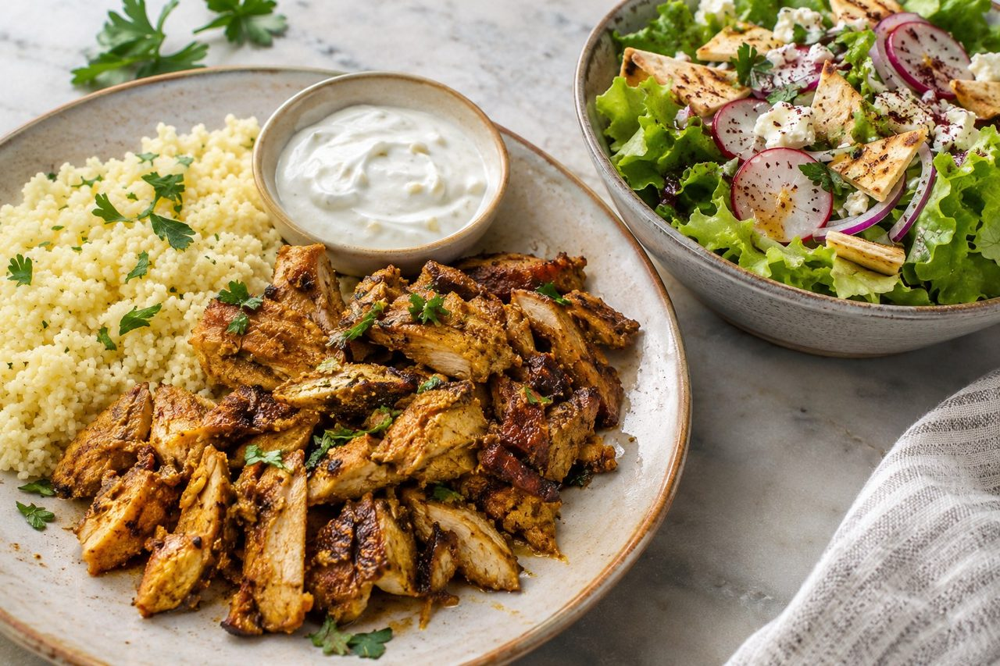

Middle Eastern-inspired · Dinner · Serves 4 · 30 min
Skillet Chicken Shawarma with Garlic Yogurt

Ingredient amounts are estimates when scaled. Original recipe and AnyList import remain unchanged.
Ingredients
- 2 lb boneless skinless chicken thighs
- 2 tbsp olive oil
- 2 tsp ground cumin
- 2 tsp ground coriander
- 1½ tsp sweet paprika
- ½ tsp ground turmeric
- ¼ tsp ground cinnamon
- 1 tsp kosher salt, plus to taste
- ½ tsp black pepper
- 4 garlic cloves, finely grated, divided
- ¾ cup plain Greek yogurt
- 1 tbsp lemon juice
- 1–2 tbsp water, as needed
Instructions
- Cut chicken into thin strips about ½ inch thick. Toss with olive oil, cumin, coriander, paprika, turmeric, cinnamon, salt, pepper and 3 grated garlic cloves. No marinating time is required.
- Heat a large heavy skillet over medium-high heat. Sear chicken in two batches in a single layer, turning occasionally, about 6–8 minutes per batch until browned and the thickest pieces reach 165°F. Reduce heat if the spices darken too quickly.
- Meanwhile, mix yogurt with the remaining garlic clove, lemon juice, a pinch of salt and enough water for a drizzleable sauce. Keep chilled until serving.
- Serve chicken with buttery couscous and garlic yogurt for four, with the separate garden salad for two. Offer harissa or chili flakes individually.